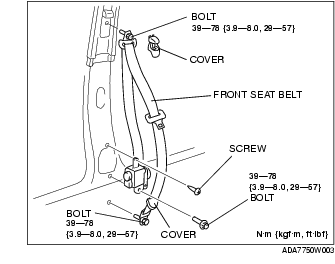

Front seat belt removal/installation
- • Handling the front seat belt (pre-tensioner seat belt) improperly can accidentally deploy the pre-tensioner, which may seriously injure you. Read the service warnings and cautions before handling the front seat belt. (SeeSERVICE WARNINGS.) (See SERVICE CAUTIONS.)
- • The side air bag sensor is attached to the lower part of the B-pillar. When working around the B-pillar, disconnect the negative battery cable or work carefully, avoiding excessive impact to the lower part of the B-pillar.
- • The ELR has a spring that will unwind if the retractor cover is removed. The spring cannot be rewound by hand. If this occurs, the ELR will not work properly. Therefore, do not disassemble the retractor.
1. Turn the ignition switch to the LOCK position.
2. Disconnect the negative battery cable and wait for 1 min or more.
3. Remove the B-pillar lower trim. (See B-PILLAR LOWER TRIM REMOVAL/INSTALLATION.)
4. Remove the cover.

5. Remove the bolts and screw, then remove the front seat belt.
6. Using a flathead screwdriver, pry out the pre-tensioner seat belt connector stopper plate.

7. Disconnect the pre-tensioner seat belt connector.
8. Install in the reverse order of removal.
9. Verify that the air bag system warning light illuminates for approx. 6 s and then goes off when the ignition switch is turned to the ON position.
- • If the air bag system warning light does not operate in the manner described above, there is a malfunction in the system. Inspect the system using the on-board diagnostic function.